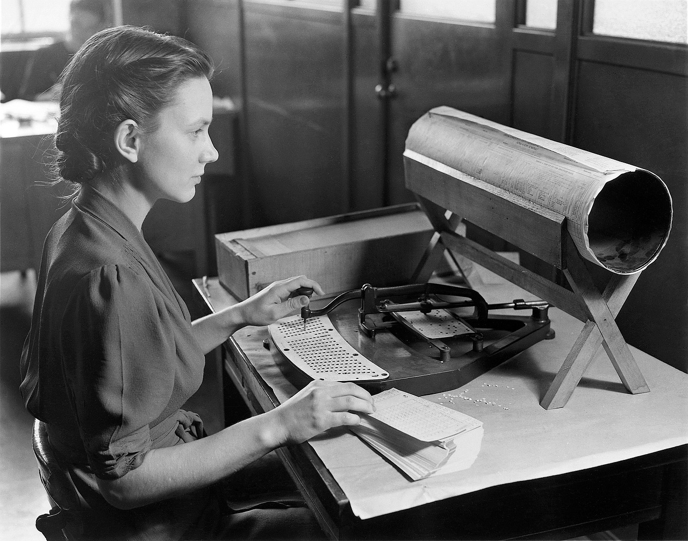

The history of electronic voting goes as far back as the 1970s with the punch card voting system, with the first system was called Votomatic. “In 1974, the first direct-recording electronic (DRE) voting machine was developed in the US and used in a legally binding election (ACE,n.d.)”. After the internet began to be widely available to the average consumer, many nations begun testing new voting technologies in elections and referendums. Punch card voting had begun to phase out of the United States after the year 2000, due to its inaccuracies and its ability to misinform. “There were confusing ballots marked for third-party candidate Patrick Buchanan in heavily Democratic precincts, suggesting they were cast by voters who had thought they were voting for Gore. There were punch-card ballots where the voters' attempt to make their choice had only succeeded in detaching a portion of the perforated paper ("hanging chads" ) or merely denting – rather than removing – the punch-out ("dimpled chads")”(Elving). Which leads us using the traditional form of electronic voting DRE voting machines.
